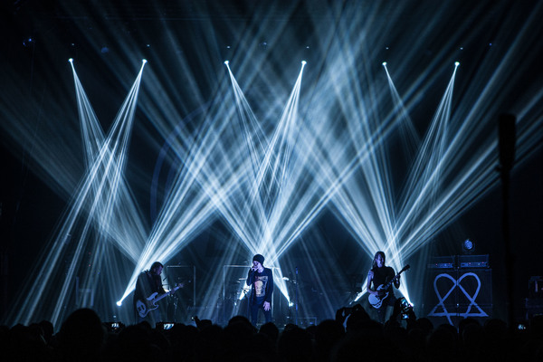

HIM | Biografia
HIM (a veces estilizado como H.I.M.) fue una banda de rock gótico finlandesa de Helsinki. Formada por primera vez en 1991 por el vocalista Ville Valo y el bajista Mikko Paananen bajo el nombre de His Infernal Majesty,lanzó su álbum debut Greatest Lovesongs Vol. 666 en 1997. En 2000, ahora con el baterista Mika "Gas Lipstick" Karppinen y el tecladista Juska Salminen, la banda lanzó Razorblade Romance, que alcanzó el puesto número uno en Finlandia, Austria y Alemania. El primer sencillo "Join Me in Death" también se ubicó en el número uno en Finlandia y Alemania, y finalmente se convirtió en platino y oro, respectivamente. Tras la incorporación de Janne "Burton" Puurtinen en los teclados, HIM lanzó Deep Shadows & Brilliant Highlights (2001) y Love Metal (2003). Ambos se ubicaron entre los diez primeros en varios países y permitieron que la banda hiciera una gira por el Reino Unido y los Estados Unidos por primera vez. En 2005, HIM lanzó Dark Light, que se convirtió en el álbum de mayor éxito comercial del grupo hasta la fecha. HIM también se convirtió en el primer grupo finlandés en la historia en recibir un disco de oro en los EE. UU. En 2007, HIM lanzó Venus Doom, cuya realización se vio empañada por problemas en la vida personal de Valo. Sin embargo, el álbum le dio a la banda su posición más alta en las listas de Estados Unidos en el número doce. Después de Screamworks: Love in Theory and Practice de 2010, HIM hizo una pausa después de que Gas Lipstick se viera obligado a tomar una licencia médica. Después de varios meses de incertidumbre, la banda se reagrupó y lanzó el álbum Tears on Tape en 2013. Gas Lipstick anunció su salida de la banda en 2015 y posteriormente fue reemplazado por Jukka "Kosmo" Kröger. El 5 de marzo de 2017, HIM anunció que la banda se disolvería luego de una gira de despedida en 2017. La banda tocó su último show en la víspera de Año Nuevo de 2017 como parte de su Festival Helldone anual. HIM es una de las bandas finlandesas de mayor éxito comercial de todos los tiempos, con ventas de más de diez millones de discos. HIM también ha recibido numerosos elogios, incluidos ocho premios Emma. La banda es conocida por su sonido distintivo, que combina elementos más melódicos y melancólicos con influencias más pesadas. Esto hizo que fuera difícil para el público clasificar la música de HIM, lo que llevó a la banda a acuñar el término "love metal". HIM también es conocido por su logo, el heartagram, que ha hecho numerosas apariciones en otros medios.